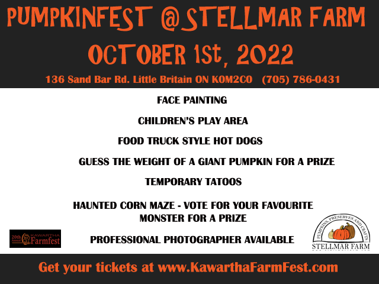
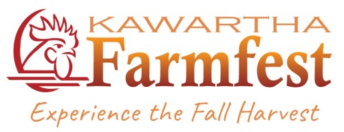

Pumpkinfest
 
Join us on October 1, 2022 for our 20 year in Kawartha Lakes Farmfest as Pumpkinfest. Come and celebrate our 20th anniversary of Pumpkinfest. See giant pumpkins and visit the craft shed at Stellmar Farm, which features: pumpkins, squash, gourds, fall decorations, flower arrangements, decorative corn, wreaths, fall crafts, gourd art, preserves, honey, and tasty pumpkin bread. Try your luck at guessing the weight of the giant pumpkin to win a gift basket. Perhaps even learn the secret behind growing giant pumpkins! Try out our full line of homemade soaps, body butters, and lotions: many products contain our own beeswax and honey! For an additional fee of $5 per person or $20 per family of 4 or more, take a tour through our haunted corn maze. Try your hand at the games around the farm. And finally bring your appetite for our hot dog lunch special. Washrooms available. Ongoing: Farmfest participants can guess the weight of a giant pumpkin, walk the corn maze ($), vote for the best monster in the maze, purchase farm products, hot dogs and crafts. Location: 136 Sandbar Road, Little Britain; From east of Valentia on Elm Tree Road, take Sandbar Road south.